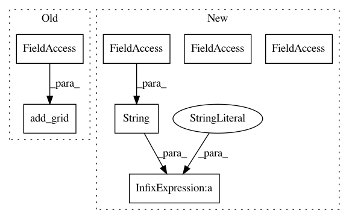

68073af8f37e02d6ea5d1f4295218031a8a9ecd0,examples/experiments/profiling/torch_research.py,,,#,60
Before Change
metrics = pipeline.get_variable("metrics")
return metrics.evaluate("accuracy")
research = (Research()
.add_grid(grid)
.add_pipeline(root=train_root, branch=train_template, variables="loss", name="train")
.add_pipeline(root=test_root, branch=test_template, name="test", run=True, execute="%100", import_from="train")
.add_function(get_accuracy, returns="accuracy", name="test_accuracy", execute="%100", pipeline="test")
After Change
n_workers = 1 if len(sys.argv) <= 1 else int(sys.argv[1])
gpu_list = [2, 4, 5, 6]
research.run(n_reps=8, n_iters=1000, workers=n_workers, name="torch_research_"+str(n_workers), gpu=gpu_list[:n_workers])
In pattern: SUPERPATTERN
Frequency: 4
Non-data size: 7
Instances
Project Name: analysiscenter/batchflow
Commit Name: 68073af8f37e02d6ea5d1f4295218031a8a9ecd0
Time: 2019-06-19
Author: a.kozhevin@analysiscenter.org
File Name: examples/experiments/profiling/torch_research.py
Class Name:
Method Name:
Project Name: analysiscenter/batchflow
Commit Name: 68073af8f37e02d6ea5d1f4295218031a8a9ecd0
Time: 2019-06-19
Author: a.kozhevin@analysiscenter.org
File Name: examples/experiments/profiling/tf_research.py
Class Name:
Method Name:
Project Name: analysiscenter/batchflow
Commit Name: 33885f74bb5ca143c50f6f09c8e16776cf7a5057
Time: 2019-07-10
Author: a.kozhevin@analysiscenter.org
File Name: examples/experiments/profiling/torch_research.py
Class Name:
Method Name:
Project Name: analysiscenter/batchflow
Commit Name: 33885f74bb5ca143c50f6f09c8e16776cf7a5057
Time: 2019-07-10
Author: a.kozhevin@analysiscenter.org
File Name: examples/experiments/profiling/tf_research.py
Class Name:
Method Name: